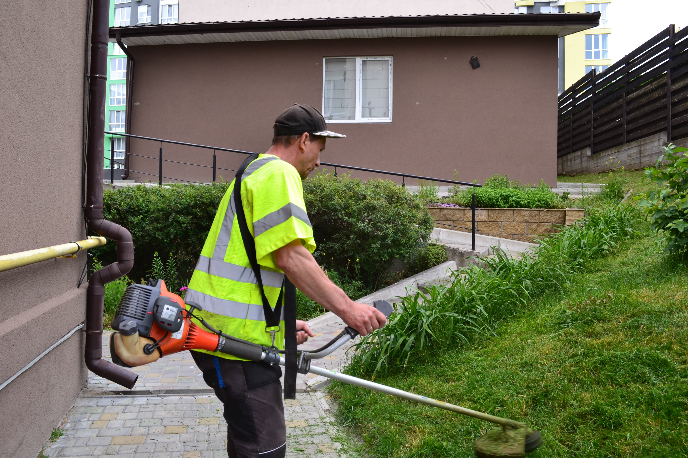
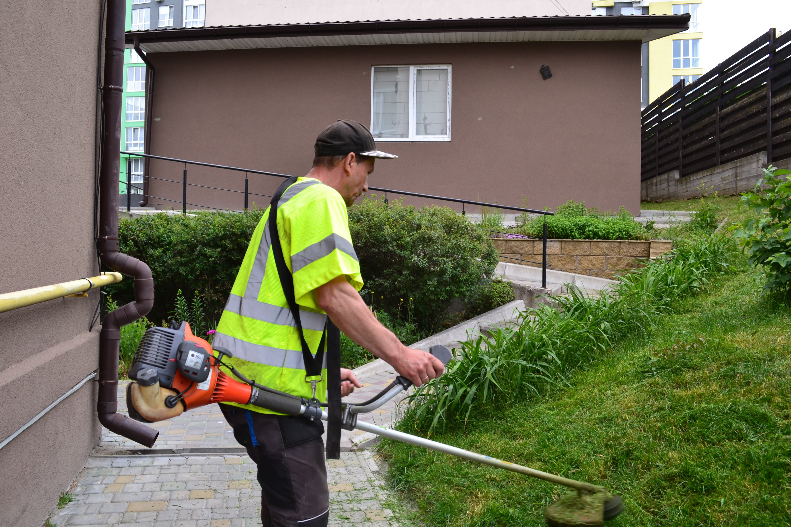

Озеленення та догляд за прибудинковою територією
В "Укр Житло Сервіс" ми дбаємо про чистоту, красу та комфорт у дворі кожного будинку, який обслуговуємо. Пропонуємо комплексні послуги з озеленення, благоустрою та регулярного догляду за прибудинковими територіями. Наші фахівці працюють із турботою про довкілля, створюючи затишний простір для відпочинку, прогулянок і щоденного життя мешканців. Ми віримо, що доглянуте подвір’я — це не лише естетика, а й показник якості життя в сучасному місті.
1. Комплексне прибирання території
Щоденне та сезонне прибирання доріжок, газонів, клумб та місць загального користування.
2. Посадка рослин і дерев
Добір та висадка зелених насаджень відповідно до умов ділянки.
3. Догляд за газоном і клумбами
Стрижка, полив, підживлення та захист від шкідників.
4. Сезонні роботи
Весняна підготовка території, осіннє очищення, укриття рослин на зиму.
5. Формування кущів та дерев
Професійна обрізка для збереження краси та здоров’я рослин.
6. Контроль стану насаджень
Регулярна перевірка та догляд, щоб рослини були здоровими і красивими.
"Укр Житло Сервіс" — надійне середовище для комфортного життя!


 

×